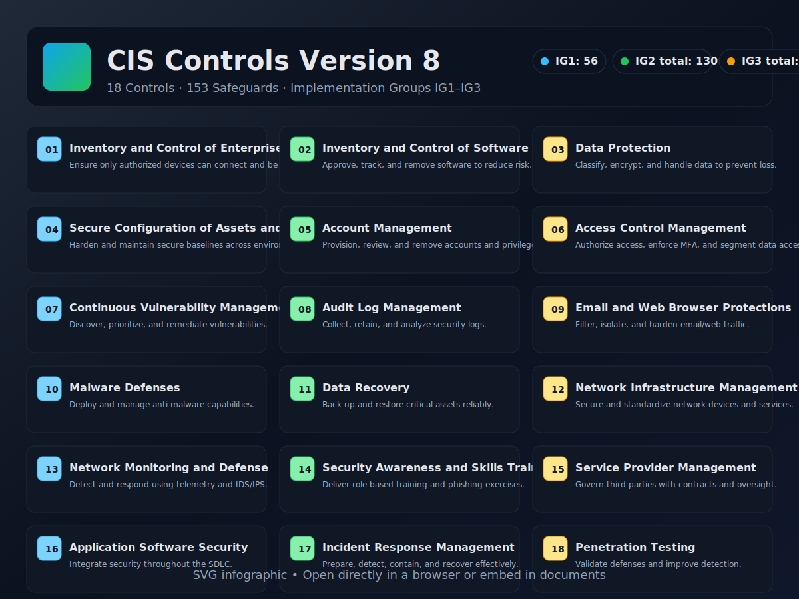

Build, defend, and verify
Explore all 18 CIS Controls with concise explanations, practical examples, and self‑assessment checklists. Filter by Implementation Group (IG1–IG3), search by keywords, and track progress.
IG1: Essential
IG2: Foundational
IG3: Advanced

18
Controls
153
Safeguards
0%
Checklist Progress
Insights
Flashcards & Checklists
Scenario & Quiz
Which IG(s) include safeguards for this control?
Which NIST CSF function(s) does this control support?
Select applicable safeguard(s) for this control
Resources
Open the source materials included in your folder to dive deeper (PDF/XLSX). These links open the local files from CIS Controls V8.
- CIS Controls v8 – Online (PDF)
- CIS Controls Principles and Goals for v8 (PDF)
- CIS Controls Version 8 (XLSX)
- CIS Controls v8 Change Log (XLSX)
Tip: If a link doesn’t open in your browser due to local file restrictions, open the file directly from the folder.
Data Loader (for Accuracy)
To ensure exactness, export the safeguards from CIS_Controls_Version_8.xlsx to CSV and load it here. The app will rebuild mappings for IG, CSF, and safeguards.
- Open the XLSX and export a CSV with columns:
control_num,control_title,sg_id,sg_title,igs,csf. - Values:
igslikeIG1;IG2,csflikeID;PR.